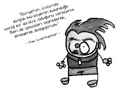

Max Wertheimer (1880-1943)
Müzik üzerine araştırmalar yapan ve bir komşunun radyosundan Hitler’in konuşmasını duyup ailesinin böyle bir adamın yönettiği bir ülkede yaşayamayacağına karar verip taşınacak kadar sıra dışı hareket edebilen ilginç bir psikologdur Wertheimer. Geştalt psikolojisinin babasıdır. Kuram daha sonraları Köhler ve Koffka tarafından geliştirilmiştir.
Geştalt Almanca kökenli bir sözcük olup yapı, form, bütün gibi anlamlar taşır. Geştalt yaklaşımına göre, bütün, onu oluşturan parçaların toplamından daha fazladır. Birey bütünü parçalarına ayrıştırarak değil bütünlük içinde algılar. Örneğin bir beste dinlenirken tek tek o besteyi oluşturan notaların sesleri değil, onların bir araya gelerek düzenledikleri bütün algılanır. Bir ormana bakarken tek tek ağaçlar değil orman görülür. İşte buradan hareketle son yıllarda çocuklara önce cümle, sonra kelime ve en son harf öğretilmektedir. Çünkü i-a-l başkadır, Ali başkadır.
Wertheimer bu ilkeye örnek olarak steoroskopik hareketi gösterir. Art arda seri bir şekilde gösterilen hareketsiz bir dizi resmin yarattığı hareket hissinin, aslında tek tek ele alındığında hiçbir resimde olmadığına dikkat etmiştir. Gerçekte bu hareket hissi, resimler arasındaki ilişkiden ortaya çıkmaktadır. Wertheimer bu görünürdeki devimi “fi olgusu” olarak adlandırıyordu. Başka bir deyişle birden fazla ışık arka arkaya yakıldığında hareket eden ışıklar olarak algılanır. Bu olay ışıklı reklamları ve filmleri insanların nasıl algıladığını da açıklamaktadır.
